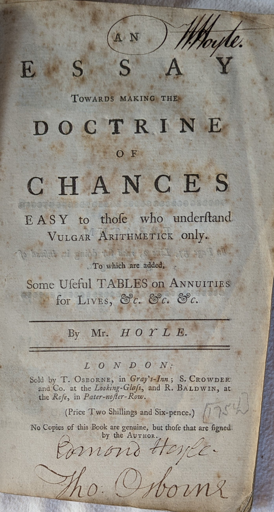

A Descriptive Bibliography of Edmond Hoyle
Copyright © 2014-26 by David Levy
(page updated 2016-09-05)User Guide
Chances.1.2
The Doctrine of Chances, sold by T. Osborne, first London edition, second issue, 1760.
 |
Title: | AN | ESSAY | Towards making the | DOCTRINE | OF | CHANCES | EASY to thoſe who underſtand | Vulgar Arithmetick only. | To which are added, | Some Uſeful TABLES on Annuities | for Lives, &c. &c. &c. | [rule] | By Mr. HOYLE. | [double rule] | LONDON: | Sold by T. Osborne, in Gray's-Inn; S. Crowder | and Co. at the Looking-Glaſs, and R. Baldwin, at | the Roſe, in Pater-noſter-Row. | (Price Two Shillings and Six-pence.) | No Copies of this Book are genuine, but thoſe that are ſigned | by the Author. |
| Collation: | 8o: A4(±A1) B–I4 K4(K4+1) [$½ signed]; 41 leaves, pp. [i–iii] iv–viii, [1] 2–73 [74] |
| Contents: | Signature (Page) Reference | Contents | Signature (Page) Reference | Running Titles |
| A1r (i) | title, with autographs of Edmond Hoyle and Tho. Osborne at the foot | |||
| A1v (ii) | ‘[row of type orn] | ERRATUM. | In Page 57, Line 2, read for doing it, inſtead of | againſt doing it. | [row of type orn]’ | |||
| A2r–K4+1v (iii–74) | see Chances.1.1 | A2r–K4+1v (iii–74) | see Chances.1.1 |
| Publisher: | Edmond Hoyle |
| Printer: | Henry Woodfall (ornaments) |
| Notices: | 1760-12-24 Public Advertiser: "Price 2s. 6d. sewed...☛ No copies of these books are genuine, but those that are signed by the author." Advertised with Chess.1. |
| Price: | 2s.6d. (title, advertisement) |
| References: | ESTC N504458, Horr 670, Jessel 795, Rather 43 |
| Copies Seen: | O [Jessel e.647(1)]; Levy [1784] |
| Notes: | A reissue of Chances.1.1 with a cancel title and a substantially lower price. The imprint "sold by" Osborne, Crowder, and Baldwin suggests that they were distributors and not publishers. However both surviving copies are autographed both by Hoyle and Osborne, suggesting that Osborne had a financial interest in the book. The book was issued at the same time as Chess.1 and Games.3. For more on this book see my blog essay "The Yorkshire Hoyles and the Doctrine of Chances". |